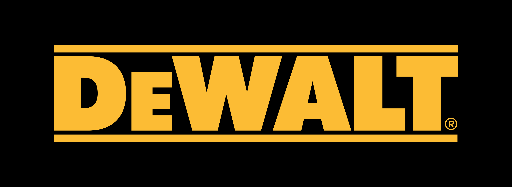

Hay muchas marcas reconocidas que se dedican a fabricar taladros de alta calidad. Aquí menciono tres de ellas:
- DeWalt:Fundada en 1924, DeWalt es una marca líder en la fabricación de herramientas eléctricas, incluyendo taladros. Sus productos son conocidos por su alta calidad y durabilidad, y son ampliamente utilizados en la construcción, la carpintería y otros trabajos de bricolaje.
|  |
- Bosch:Fundada en 1886, Bosch es una de las marcas de herramientas eléctricas más antiguas y respetadas del mundo. Su amplia gama de productos incluye taladros, sierras, amoladoras y otros equipos eléctricos. La marca se enorgullece de ofrecer productos de alta calidad y eficiencia.
- Makita:Fundada en 1915, Makita es una marca líder en la fabricación de herramientas eléctricas, incluyendo taladros, sierras y amoladoras. La marca se enorgullece de ofrecer productos innovadores y de alta calidad que brindan resultados precisos y eficientes.
|
|
Estas tres marcas son conocidas por la calidad de sus productos y la satisfacción de sus clientes, y ofrecen una amplia gama de taladros para satisfacer diferentes necesidades y presupuestos.